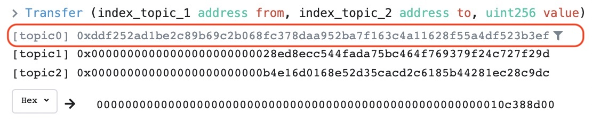

Analyzing USDC usage on Ethereum
Started: Jan 10, 2021
Last edited: Jan 10, 2022
Let's say we want to see how many USDC transfers are being done per day on the Ethereum network.
Since USDC conforms to the requirements of an ERC-20 token, there are some key events (logs) that get 'emitted' when an ethereum user performs certain actions. In Dune, all logged events (from any smart contract) get stored in a large table called ethereum."logs"
Let's look at some transactions in this table:
SELECT * FROM ethereum."logs" -- select all columns from the data table "logs" in the ethereum database
LIMIT 5 -- limit to 5 rows onlyLet's start by filtering to only the events emitted by the USDC smart contract. Using etherscan.io we can find that the contract address of USDC on ethereum is: 0xa0b86991c6218b36c1d19d4a2e9eb0ce3606eb48
SELECT * FROM ethereum."logs"
WHERE "contract_address"='\xa0b86991c6218b36c1d19d4a2e9eb0ce3606eb48' -- filter this column using the USDC contract address
LIMIT 5The 'topic1' column lists the hash of the event signature that was emitted. An easy way to find commonly emitted events from this contract is to use the Events tab corresponding to the smart contract that we're interested in. This page lists the 25 latest events emitted during use of the smart contract. Luckily for us, transfer events are very common and we can usually find an example hash high up on the page.
Here's an example: 
Interestingly, Dune numbers topics from one (topic1, topic2, ...) whereas etherscan numbers them from zero (topic0, topic1, ...). So, we're going to use the event hash listed under topic0 in etherscan to filter the topic1 columns in Dune:
SELECT * FROM ethereum."logs"
WHERE "contract_address"='\xa0b86991c6218b36c1d19d4a2e9eb0ce3606eb48'
AND "topic1"='\xddf252ad1be2c89b69c2b068fc378daa952ba7f163c4a11628f55a4df523b3ef' -- hash of transfer event signature
LIMIT 5So, now we're listing a sample of 5 transfer events (filtered based on the event hash) emitted by the USDC smart contract (filtered by the contract address). Let's expand this query to list all transfers that occurred in the last day
SELECT * FROM ethereum."logs"
WHERE "contract_address"='\xa0b86991c6218b36c1d19d4a2e9eb0ce3606eb48'
AND "topic1"='\xddf252ad1be2c89b69c2b068fc378daa952ba7f163c4a11628f55a4df523b3ef' -- hash of transfer event signature
AND "block_time" > now() - interval '1 day' -- add a filter to find transfers that were emitted in the last day
-- ^ ^
-- | |
-- sql function that |
-- returns current |
-- date & time sql operator that enables
-- easy calculation of time intervals
-- LIMIT 5 -- here, we no longer need to limit to 5 rowsThis is a large query and can take some time to load. If you look at the bottom-left of the query screen above, you'll notice a count of the number of rows in the table. This is the number of transfers that took place in the last 24hrs!
An easier way to display this, would be to use the count() aggregator function as follows:
SELECT COUNT(*) FROM ethereum."logs" -- using the count() aggregate function to count the number of rows instead
WHERE "contract_address"='\xa0b86991c6218b36c1d19d4a2e9eb0ce3606eb48'
AND "topic1"='\xddf252ad1be2c89b69c2b068fc378daa952ba7f163c4a11628f55a4df523b3ef'
AND "block_time" > now() - interval '1 day'We're not done yet! We're close though.